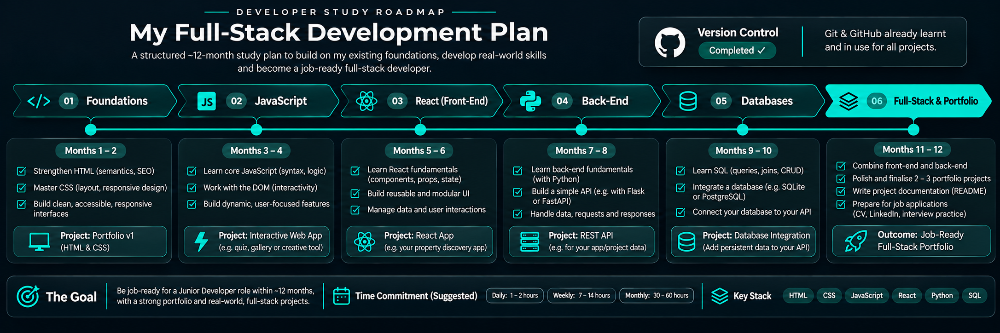

Welcome to My Portfolio
This is the homepage of my portfolio website.
Roadmap Graphic

What am I learning now?
This list is in my preferred order, I'd like to learn to a relatively good level of each language/technology before moving to the next.
- HTML - Completed
- CSS - Current
- JavaScript - Future
- React - Future
- TypeScript - Future
- Python - Future
- SQL & PostgreSQL - Future